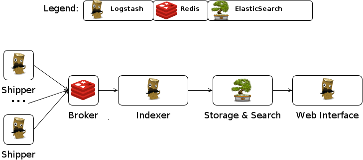
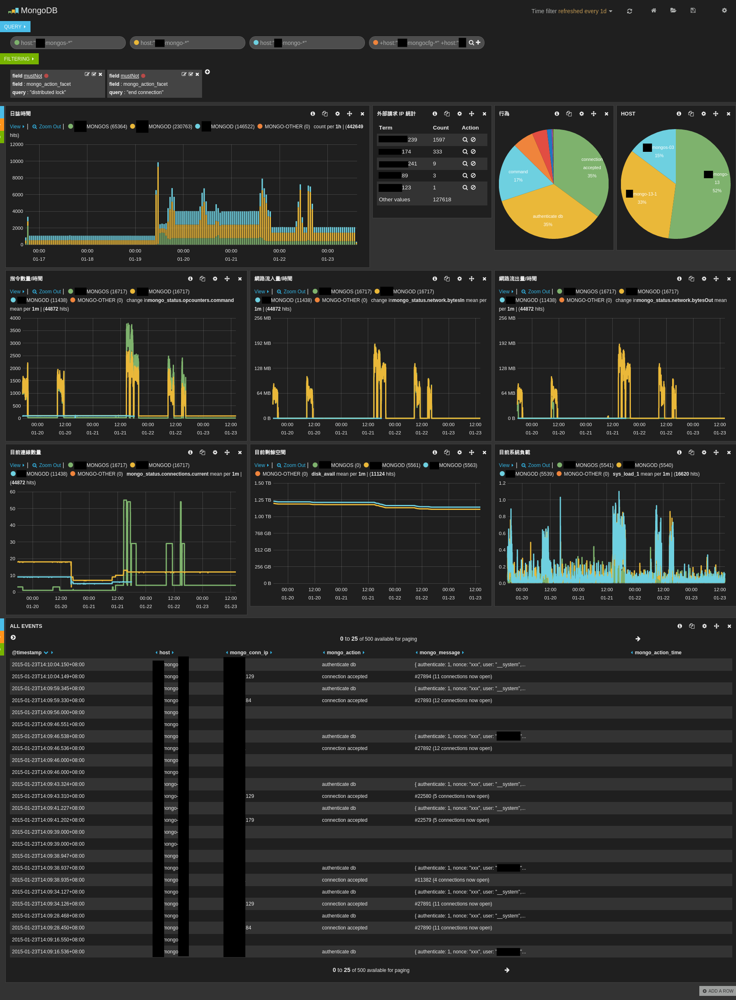

中等規模環境下的集中式 Log 管理及分析
23/Jan 2015
Log 集中管理可以提供進一步的分析，讓系統管理者在發生問題的時候可以更快的排除錯誤 ，也可以看出某些趨勢，提早做出一些可能有影響的決策。目前其實有不少的工具都可以用 在處理 Log 集中管理的問題，我這邊也提供一個中等規模的解決方案。
在小型的環境(單機，少量程式) Log 其實隨便亂放都沒差，通常都只有在出問題的時候才 會去撈 Log 協助排除問題。在大型的環境(數以百計的主機跟 App 以上)，ㄜ~~~~我沒經驗 不敢隨意猜測。所以這邊是用一個數十台 MongoDB 的環境來討論 Log 集中管理的處理 方式。
在 Logstash 的使用情境下，有幾種典型角色：

- Shipper
- 蒐集
- Broker
- 暫存
- Indexer
- 解析
- Storage & Search
- 永久儲存
- Web Interface
- 分析界面
Shipper + Broker + Indexer 在小型的環境其實可以整合在同一個 Logstash 裡面一次 處理，不過一開始也有提到，在小型的環境，哪有人在搞複雜的 Log 分析…XD，既然要做 就一次做到位吧。
不過這邊還有另一個問題，就是 Logstash 是用 Ruby 寫的，然 後透過 Java 來執行，所以需要安裝 Java，但是像在 MongoDB 的環境，我不 想在機器上安裝太多額外的東西，而且 Java 其實還蠻肥的，如果只是單純的 Shipper 角色，沒有必要搞那麼多有的沒的套件把系統弄髒，所以我另外開發了一個小工具 gogstash 來做 Shipper 的工作。
Broker 選用 Redis，聽說效能不錯？
Indexer 仍然使用 Logstash ，因為 Logstash 已經有蠻多方便的設定可以快速的 解析各式各樣的 Log 。
Storage & Search 選擇 ElasticSearch ，它使用了 Lucene 當基底，可以有效率
的分析及處理各種自然語言，不過其實對一般的 Log 來說，大部分的情況不會用到太深入的
功能，有點用牛刀殺雞的感覺，反正 ElasticSearch 也還蠻好用的，就這樣吧…^_^
Web Interface 選擇 3.x 版的 Kibana ，它可以在網頁上展示還不錯看的報表。
Shipper 設定
MongoDB 的部份這邊先不討論，只是拿來當個案例而已。 Shipper 的重點就是要把所有 機器上的 Log 都送到 Broker ，我這邊想要蒐集的資料包括了 MongoDB 本身的 Log ， 還有機器的狀態也想要一併分析，所以有幾個 gogstash 的設定。
Broker 設定
Redis 要做一個稱職的 Broker 其實有點麻煩，因為它可能是因為效率的問題，在 High availability 方面的設計不是很理想，不過也還算堪用，只是設定上有點難搞…Orz ，我目前使用 Docker 來建構 Redis 環境，裡面有用我 Patch 過的 Fig ，另外 Docker Image 是用 Docker Builder 建出來的， Redis 的 sentinel 情況 比較麻煩，可能還是要參考一下Redis Sentinel 官方文件才比較容易理解。底下列出一 些相關的設定方式給大家參考。
- fig.yml
- redis/redis.conf
- Redis 基本設定
- redis/sentinel.conf
- Redis Sentinel 設定
- redis/start.sh
- Docker Builder 啟動腳本
Indexer 設定
Indexer 其實是 Log 分析的一大重點，因為 Log 可能會有各式各樣的描述，再加上每個人 想分析的東西不盡相同，所以很難用一個標準化的設定就能通吃所有情況，這邊我是用 MongoDB 系統管理者的角度來處理 Log。
- fig.yml
- logstash/index-mongodb.conf
- 分析 MongoDB Log
- logstash/index-mongodb-status.conf
- 分析 MongoDB 服務狀態
- logstash/index-mongodb-df.conf
- 分析硬碟空間使用狀況
- logstash/index-mongodb-sys.conf
- 分析系統負載資訊
- logstash/start.sh
- Docker Builder 啟動腳本
Storage & Search 設定
ElasticSearch 最常見的問題其實是它預設在建索引的時候會自動分詞之後才儲存，這 樣會在做分組統計的時候出現狀況，像是 “connection accepted” 這個詞會被拆成 “connection” “accepted” 這兩個詞來做統計，但是其實我想要的是 “connection accepted” 整個詞來進 行統計，所以某些欄位需要額外設定讓它不要分詞，詳細的設定還是要參考 ElasticSearch 相關文件，底下設定給大家參考。
- fig.yml
- eslogstash/elasticsearch.yml
- ElasticSearch 基本設定
- eslogstash/logging.yml
- 這個檔案基本上沒有修改，只是方便 Fig 直接把整個目錄掛進去
- eslogstash/analysis/stopword.txt
- 用來排除某些特定(不感興趣)的詞
- eslogstash/analysis/synonym.txt
- 設定同義詞
- eslogstash/templates/kdtmpl.json
- 動態模板，把
*_facet欄位預設成不分詞
- 動態模板，把
Web Interface 設定
Kibana 的設定就相對簡單很多，主要是因為我用 Docker 把 Kibana 跟 ElasticSearch 的環境分開，不然可以免設定就直接用了。
QA
- 上面的 fig.yml 有些奇怪的環境變數像是
SERVICE_9200_DNS=eslogstash是在幹嘛的？
這些是我在 Docker Infra 架構簡介與實例 這邊提到 的架構，其中的某些設定，因為有點複雜，有興趣的就自行閱讀吧，反正把那些服務串起來 就對了。
另外 DOCKER_WAITEXIT=1 這個是 Docker Builder 提供的一個設定
- 為什麼不用 logstash-forwarder 就好，還另外重刻一個 gogstash ？
其實我之前也有試用過 logstash-forwarder ，但是後來還是放棄了，因為 logstash-forwarder 目前只有支援 lumberjack 這種輸出方式，而且我還沒找到可以方便弄成 High availability 的辦法，標題有提到這邊主要是要解決針對中等規模環境下的問題，所以我認為 High availability 還蠻重要的，用 logstash-forwarder 的話，只要 lumberjack 那台機器出狀況， 就會掉 Log 了，如果還是想用 logstash-forwarder 的話，要用 ZooKeeper 之類 的輔助方式來達成 High availability 的目的。
另外就是 logstash-forwarder 本身架構上沒有設計成方便擴充的形式，所以如果要幫 它加上 Redis 輸出的話，我評估起來比我重寫一個還花時間，所以就乖乖硬幹啦…XD
但是目前的解法也還是有一些問題，就是 logstash 吃 Redis 資料的時候，沒有支 援 Redis Sentinel 的方式，所以要是主要的 Redis 掛掉的時候，目前架構下， Log 會一直 Queue 在 Redis 上面，因為 logstash 不知道要去哪裡要資料了，要 解決這個問題的話，需要修改 Logstash Input Redis Plugin，不過即使這種情況發 生了， Redis 上面也還是會有資料，所以不會掉 Log ，所以就先這樣弄，看看新版的 logstash 會不會解決這個問題吧。
Demo 截圖
